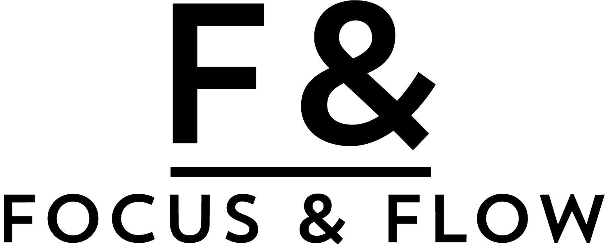

Live Case Clinic
Aus realen Themen entsteht ein kuratierter Case für einen fokussierten Sprint.

Infos ansehenGolden Ticket bestätigt
Am 23. September treffen wir uns in Augsburg zu einer exklusiven, kuratierten Runde mit Hakan & Marc. Am Folgetag geht der Austausch als Special weiter: gemeinsamer Oktoberfestbesuch in München.
Warum dabei sein?
Das Live-Lagerfeuer ist kein Vortrag zum Zurücklehnen. Es ist eine Werkstatt-Runde für Menschen, die Projektstau, Umsetzungsdruck und Reibung im Tagesgeschäft kennen und offen darüber sprechen wollen.
Aus realen Themen entsteht ein kuratierter Case für einen fokussierten Sprint.
Hakan & Marc zeigen, wie Fokus, New Leadership und Umsetzungskraft zusammenkommen.
Live-Demo und Prototyping mit KI und weiteren Tools statt Theorie auf Folien.
Auf einen Blick
Der Tag in Augsburg
Die genaue Reihenfolge und Intensität justieren wir für die Runde. Sicher ist: Es wird praxisnah, pointiert und mit genug Raum, um aus Impulsen testbare nächste Schritte zu machen.
Ab 08:30 Uhr Kennenlernen, ab 09:00 Uhr gemeinsamer Start in die Themen der Runde.
Was Führung braucht, wenn Projekte, Wertströme und KI den Takt verändern.
Ein kompakter Blick auf die nächste Ausbaustufe von Fokus, Flow und Umsetzungskraft.
Wie KI im Arbeitsmodus hilft, schneller zu strukturieren, zu verdichten und zu entscheiden.
Anonymisierte, angereicherte oder konsolidierte Cases werden im Sprint zu einem testbaren Prototyp weiterentwickelt.
Die Sprint-Ergebnisse werden vorgestellt, geschärft und in anschlussfähige nächste Schritte übersetzt.
+1-Special
Wenn es jemanden gibt, der dieselben Werk-Themen mit Ihnen bewegt, können Sie eine passende +1-Person vorschlagen. Wichtig ist nicht der Titel, sondern der fachliche Bezug zu Projektstau, Umsetzung, Lean/KVP, Engpässen oder Kennzahlenchaos. Da die Runde bewusst kuratiert und die Plätze limitiert sind, prüfen wir Passung und Verfügbarkeit anschließend persönlich.
+1 vorschlagenSpecial am Folgetag
Am 24. September setzen wir den Austausch in entspannter Runde auf dem Oktoberfest fort. Im Armbrustschützenzelt sind Tische von 10:00 Uhr bis 16:15 Uhr reserviert. Kein Pflichtprogramm, sondern ein besonderes Extra für alle, die noch Zeit und Lust haben.
Reservierte Tische inklusive Verzehrgutscheinen sind über Focus & Flow abgedeckt. Treffpunktdetails folgen separat.
Vorbereitung
Sie müssen nichts ausarbeiten. Hilfreich ist nur, wenn Sie vorab kurz überlegen, welches Thema in Ihrem Werk gerade wirklich Energie zieht. Wir anonymisieren, verdichten und ergänzen die eingebrachten Themen bei Bedarf, damit ein passender Case für den gemeinsamen Sprint entsteht.
Ein Projekt, das wichtig ist, aber nicht richtig vorankommt.
Ein Bereich, in dem Verbesserung immer wieder liegen bleibt.
Ein Muster, das alle kennen, aber niemand wirklich auflöst.
Gastgeber
FAQ
Ja. Diese Seite ist für Personen gedacht, die bereits zugesagt haben und ihr Golden Ticket erhalten.
Nutzen Sie den Button “+1 vorschlagen”. Bitte nennen Sie Name, Unternehmen, Rolle und den fachlichen Bezug zum Thema. Wir prüfen anschließend Passung und Verfügbarkeit.
Nein. Es reicht, wenn Sie ein reales Thema im Kopf haben. Wir anonymisieren und kuratieren die Fälle so, dass ein spannender, bearbeitbarer Sprint-Case entsteht.
Focus & Flow übernimmt die Tagungspauschale am 23.09. sowie die reservierten Oktoberfest-Tische inklusive Verzehrgutscheinen. An-/Abreise, Hotel und weitere Verpflegung liegen bei den Teilnehmenden.
Veranstaltungsort ist das Hotel Garner Augsburg Nord by IHG, Regensburger Str. 7, 86156 Augsburg. Ankommen ist ab 08:30 Uhr, offizieller Programmstart um 09:00 Uhr.
Ja. Für unser Event ist ein Zimmerkontingent im Hotel Garner reserviert. Wenn Sie dort übernachten möchten, empfehlen wir eine frühzeitige Buchung. Selbstverständlich können Sie auch ein anderes Hotel wählen.
Nein. Das Oktoberfest-Special am Folgetag ist ein besonderes Extra. Die reservierte Zeit im Armbrustschützenzelt ist von 10:00 Uhr bis 16:15 Uhr.